Operating Documentation
Direction 5500113, Rev# 3
Discovery MR450 1.5T Service Methods
Module Version 8.0, Version Date 10/6/09
Operating Documentation |
| Required Persons | Preliminary Reqs | Procedure | Finalization |
|---|---|---|---|
| 1 | Not Applicable | 10-15 minutes | Not Applicable |
This test checks the functionality of the Body Coil Air Blower system, which cools the patient bore wall surfaces by forcing air between the gradient coil and the RF coil (see Illustration 1). Air enters the magnet through two rear air ports; therefore, the rear of the magnet needs to have an airtight seal in order to maintain a sufficient pressure head to force air to flow. This helps to transfer heat away from the bore wall with convection. If there is not an air tight seal in the rear of the magnet, there will not be enough pressure to force air through the space between the gradient and RF coils.
The system currently has a configuration according to the block diagram shown in Illustration 2. Air is pulled out of the magnet room and travels through the penetration wall and into the heat exchange cabinet (HEC). This air is then cooled and sent back through the penetration wall and into the magnet room. This cooled air then travels from the penetration wall, splits into two air hoses, and into the back of the magnet through tubing in the rear end bell or through tubing in the body coil. At the front of the magnet are two air sensors that capture an average airflow measurement and relay the information back to the HEC Display. This airflow requires a measurement of greater than 500 feet per minute (fpm) during scanning operations. If the airflow measurement is less than 500 fpm, please refer to Troubleshooting Body Coil Air Flow.
Illustration 1: Air Flow System
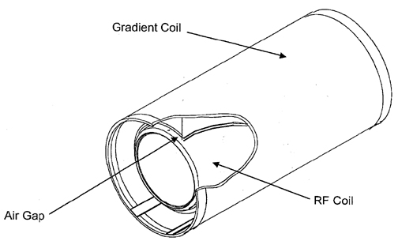
Illustration 2: Input/Output for DVMR Cooling Cabinet
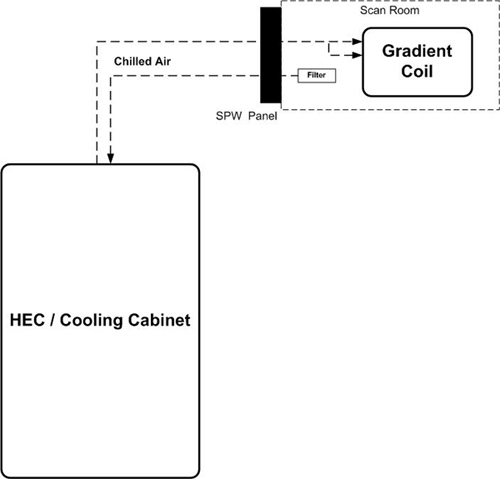
| ||||
| STRONG MAGNETIC FIELD! | ||||
| FERROUS MATERIALS CAN BECOME DANGEROUS PROJECTILES IN THE PRESENCE OF THE MAGNETIC FIELD PRODUCED BY THE discovery MAGNET. | ||||
| DO NOT BRING ANY FERROMAGNETIC TOOLS OR EQUIPMENT INTO THE MAGNET ROOM. |
| Condition | Reference | Effectivity |
|---|---|---|
System software must be booted. | - | - |
| NOTE: | This procedure will consist of taking readings from the HEC display on the heat exchanger cabinet and determining if an error is occurring with the air flow system. |
Go to the heat exchanger cabinet and view the display.
Select the following buttons from the main menu display in order to view the air flow set point and feedback readings:
| NOTE: | Select <ESC> multiple times to return to the main menu display. |
Monitor (F3)
Blower (F4)
Confirm that the air flow set point corresponds to a measurement equal to or greater than 550 fpm.
Confirm that the air flow feedback corresponds to a measurement greater than 500 fpm.
If the feedback is lower than 500 fpm, please refer to Troubleshooting Body Coil Air Flow to troubleshoot the body coil air flow.
If the feedback is greater than or equal to the Normal mode set point, the system is functioning properly.
The air flow fpm should always be greater than 500 fpm. In situations where the fpm falls under 500 fpm, please follow the checklist for troubleshooting below. After each checklist task, please confer the HEC control panel to see if the air flow fpm is 500 fpm or greater.
| NOTE: | If the air flow fpm is between 450 fpm and 500 fpm, the system will be able to complete a scan, but unable to initiate a scan. If the air flow falls under 450 fpm, the scan control system will automatically shutdown. |
Ensure that the farthest right blower variable frequency drive (VFD) display (see Illustration 3) is reading 70.0 Hz.
Illustration 3: VFD Blower Display in HEC
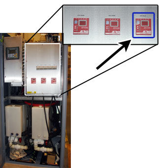
Check the hose connections at the top of the HEC.
Check the air filter on the Secondary Penetration Wall (SPW).
Check the hose connections on the SPW from both the Equipment Room and the Scan Room side.
Check the hose connections in the rear end bell.
Check that the connections are properly attached at the “Y” junction. This “Y” junction is in the cable tray splitting the 4 inch hose to two smaller diameter hoses.
Ensure that the Patient Air Hose is not swapped with the RF Cooling Air Hoses. If the Patient Air Hose is not in the appropriate location, please switch this location with the RF Cooling Air Hose.
Illustration 4: Air Flow Hoses
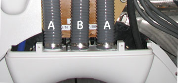
| A | RF Cooling Air Hose |
| B | Patient Air Hose |
To distinguish the Patient Air Hose from the RF Cooling Air Hose, look at the front control panel to turn off the Patient Air Hose. Once the fan is off for Patient Air Flow, there should only be air flow through the RF Cooling Hoses.
For a system with an In Room Display (IRD) , press the fan button until the lights to the left are no longer on (see Illustration 5).
Illustration 5: IRD Control Panel
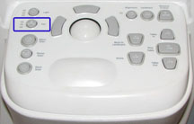
For a system without an IRD, press the fan button off.
Illustration 6: Control Panel (No IRD)
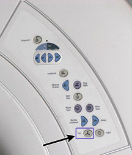
Check for any gaps between the rear end bell and the RF coil as well as the front end bell to the RF coil.
Check the air seals on the rear end bell. Ensure the seals (part numbers 5323651 and 5323652) are in place (see Illustration 7).
Illustration 7: Rear End Bell Seals
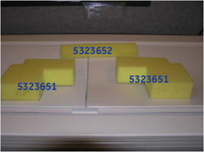
Remove the front end bell to:
Check the front orientation of sensor. The sensor head should be in the center of the cut out. The bolt heads should be facing the FE (see Illustration 8).
Illustration 8: Front End Bell Sensors
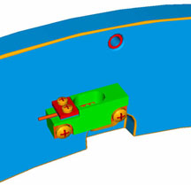
Check where the cables are routed. None of the cables should be routed on top of the sensors. If there are cables touching the tops of sensors, please relocate these cables to not disturb the sensors (see Illustration 9).
Illustration 9: Sensor Locations
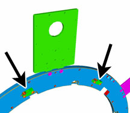
Remove the rear end bell to:
Check the seal between the rear end bell and the XRMB Gradient coil. The seal should not be torn or damaged. The seal should be completely touching the rear end bell (see Illustration 10).
Illustration 10: Seal for Rear End Bell and XRMB Gradient Coil
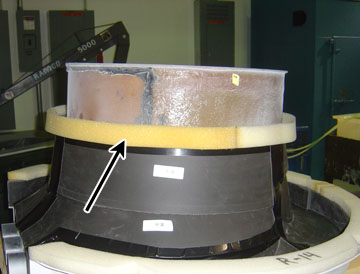
Check the seal in the gradient coil (see Illustration 11).
Illustration 11: Seal in Gradient Coil
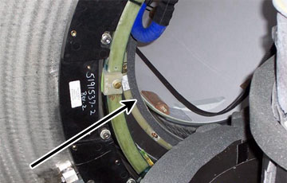
Check the gap between the RF coil and the gradient coil. Ensure that nothing is stuck in between them.
No finalization steps.